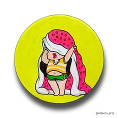

<!DOCTYPE html>
<html lang="en" class="html_stretched responsive av-preloader-active av-preloader-enabled av-default-lightbox  html_header_top html_logo_center html_bottom_nav_header html_menu_right html_custom html_header_sticky html_header_shrinking html_mobile_menu_phone html_header_searchicon html_content_align_center html_header_unstick_top_disabled html_header_stretch_disabled html_minimal_header html_elegant-blog html_modern-blog html_av-overlay-side html_av-overlay-side-classic html_av-submenu-noclone html_entry_id_734 av-cookies-no-cookie-consent av-no-preview html_text_menu_active ">
<head>
<meta charset="UTF-8" />
<meta name="robots" content="index, follow" />

<!-- mobile setting -->
<meta name="viewport" content="width=device-width, initial-scale=1">

<!-- Scripts/CSS and wp_head hook -->
<title>enliven_arts</title>
<link rel='dns-prefetch' href='https://fonts.gstatic.com/' />
<link rel="alternate" type="application/rss+xml" title="Enliven &raquo; Feed" href="feed.xml" />
<link rel="alternate" type="application/rss+xml" title="Enliven &raquo; Comments Feed" href="comment_feed.xml" />

<!-- google webfont font replacement -->
<script src="new_scripts.js"></script>
<script src="emoji.js"></script>
<link rel="stylesheet" href="new_style.css">


<!--[if lt IE 9]><script src="https://www.enlivenacs.com.au/wp-content/themes/enfold/js/html5shiv.js"></script><![endif]-->
<link rel="icon" href="motu.jpg" type="image/jpeg">

</head>

<body id="top">

	<div class='av-siteloader-wrap av-transition-enabled av-transition-with-logo'>
		<div class='av-siteloader-inner'>
			<div class='av-siteloader-cell'>
				
				<div class='av-siteloader'>
					<div class='av-siteloader-extra'>
					</div>
				</div>
			</div>
		</div>
	</div>
	<div id='wrap_all'>

<header id='header'>
		<div  id='header_main' class='container_wrap container_wrap_logo'>
        <div class='container av-logo-container'>
					<div class='inner-container'>
						<ul class='noLightbox social_bookmarks icon_count_2'>
							<li class='social_bookmarks_instagram av-social-link-instagram social_icon_1'>
								<a target="_blank" aria-label="Instagram" href='#' aria-hidden='false' data-av_icon='' data-av_iconfont='entypo-fontello' title='Instagram' rel="noopener noreferrer">
									<span class='avia_hidden_link_text'>Instagram</span>
								</a>
							</li>
							<li class='social_bookmarks_linkedin av-social-link-linkedin social_icon_2'><a  aria-label="Link to LinkedIn" href='http://www.linkedin.com/in/susiewaller' aria-hidden='false' data-av_icon='' data-av_iconfont='entypo-fontello' title='LinkedIn'>
								<span class='avia_hidden_link_text'>LinkedIn</span>
							</a>
						</li>
					</ul>
				</div>
			</div>
			<div id='header_main_alternate' class='container_wrap'>
				<div class='container'>
					<nav class='main_menu' data-selectname='Select a page'  role="navigation" itemscope="itemscope" itemtype="https://schema.org/SiteNavigationElement" >
						<div class="avia-menu av-main-nav-wrap">
							<ul id="avia-menu" class="menu av-main-nav">
								<li id="menu-item-3287" class="menu-item menu-item-type-post_type menu-item-object-page menu-item-home current-menu-item page_item page-item-734 current_page_item menu-item-top-level menu-item-top-level-1">
									<a href="https://www.enlivenacs.com.au/" itemprop="url">
										<span class="avia-bullet">
										</span>
										<span class="avia-menu-text">Home</span>
										<span class="avia-menu-fx">
											<span class="avia-arrow-wrap">
												<span class="avia-arrow">
												</span>
											</span>
										</span>
									</a>
								</li>
<li id="menu-item-3283" class="menu-item menu-item-type-post_type menu-item-object-page menu-item-top-level menu-item-top-level-2"><a href="https://www.enlivenacs.com.au/about/" itemprop="url"><span class="avia-bullet"></span><span class="avia-menu-text">About</span><span class="avia-menu-fx"><span class="avia-arrow-wrap"><span class="avia-arrow"></span></span></span></a></li>
<li id="menu-item-3284" class="menu-item menu-item-type-post_type menu-item-object-page menu-item-top-level menu-item-top-level-3"><a href="https://www.enlivenacs.com.au/services/" itemprop="url"><span class="avia-bullet"></span><span class="avia-menu-text">Services</span><span class="avia-menu-fx"><span class="avia-arrow-wrap"><span class="avia-arrow"></span></span></span></a></li>
<li id="menu-item-3454" class="menu-item menu-item-type-post_type menu-item-object-page menu-item-mega-parent  menu-item-top-level menu-item-top-level-4"><a href="https://www.enlivenacs.com.au/projects/" itemprop="url"><span class="avia-bullet"></span><span class="avia-menu-text">Projects</span><span class="avia-menu-fx"><span class="avia-arrow-wrap"><span class="avia-arrow"></span></span></span></a></li>
<li id="menu-item-3220" class="menu-item menu-item-type-post_type menu-item-object-page menu-item-top-level menu-item-top-level-5"><a href="https://www.enlivenacs.com.au/contact/" itemprop="url"><span class="avia-bullet"></span><span class="avia-menu-text">Contact</span><span class="avia-menu-fx"><span class="avia-arrow-wrap"><span class="avia-arrow"></span></span></span></a></li>
<li id="menu-item-search" class="noMobile menu-item menu-item-search-dropdown menu-item-avia-special"><a aria-label="Search" href="?s=" rel="nofollow" data-avia-search-tooltip="

&lt;form role=&quot;search&quot; action=&quot;https://www.enlivenacs.com.au/&quot; id=&quot;searchform&quot; method=&quot;get&quot; class=&quot;&quot;&gt;
	&lt;div&gt;
		&lt;input type=&quot;submit&quot; value=&quot;&quot; id=&quot;searchsubmit&quot; class=&quot;button avia-font-entypo-fontello&quot; /&gt;
		&lt;input type=&quot;text&quot; id=&quot;s&quot; name=&quot;s&quot; value=&quot;&quot; placeholder='Search' /&gt;
			&lt;/div&gt;
&lt;/form&gt;" aria-hidden='false' data-av_icon='' data-av_iconfont='entypo-fontello'><span class="avia_hidden_link_text">Search</span></a></li><li class="av-burger-menu-main menu-item-avia-special ">
	        			<a href="#" aria-label="Menu" aria-hidden="false">
							<span class="av-hamburger av-hamburger--spin av-js-hamburger">
								<span class="av-hamburger-box">
						          <span class="av-hamburger-inner"></span>
						          <strong>Menu</strong>
								</span>
							</span>
							<span class="avia_hidden_link_text">Menu</span>
						</a>
	        		   </li></ul></div></nav></div> </div>
		<!-- end container_wrap-->
		</div>
		<div class='header_bg'></div>

<!-- end header -->
</header>

	<div id='main' class='all_colors' data-scroll-offset='148'>

	<div id='av_section_1'  class='avia-section main_color avia-section-large avia-no-border-styling  avia-full-stretch avia-bg-style-scroll  avia-builder-el-0  el_before_av_section  avia-builder-el-first   av-minimum-height av-minimum-height-50  container_wrap fullsize' style='background-repeat: no-repeat; background-image: url(https://www.enlivenacs.com.au/wp-content/uploads/2020/05/Enliven-home-banner-2.jpg);background-attachment: scroll; background-position: top right;  margin-top:0px; margin-bottom:0px; '  data-section-bg-repeat='stretch' data-av_minimum_height_pc='50'><div class='container' ><main  role="main" itemprop="mainContentOfPage"  class='template-page content  av-content-full alpha units'><div class='post-entry post-entry-type-page post-entry-734'><div class='entry-content-wrapper clearfix'>
<div class="flex_column av_two_fifth  av-hide-on-mobile  flex_column_div av-zero-column-padding first  avia-builder-el-1  avia-builder-el-no-sibling  " style='border-radius:0px; '><section class="av_textblock_section "  itemscope="itemscope" itemtype="https://schema.org/CreativeWork" ><div class='avia_textblock  '   itemprop="text" ><h1>Enliven &#8211; awakening the spirit of creativity that dwells within us all.</h1>
</div></section></div>

</div></div></main><!-- close content main element --></div></div><div id='av_section_2'  class='avia-section main_color avia-section-large avia-no-border-styling  avia-full-stretch av-parallax-section av-section-color-overlay-active avia-bg-style-parallax  avia-builder-el-3  el_after_av_section  el_before_av_section   container_wrap fullsize' style='background-color: #f5f5eb;  '  data-section-bg-repeat='stretch'><div class='av-parallax' data-avia-parallax-ratio='0.3' ><div class='av-parallax-inner main_color  avia-full-stretch' style = 'background-color: #f5f5eb; background-repeat: no-repeat; background-image: url(https://www.enlivenacs.com.au/wp-content/uploads/2020/05/Enliven_Home-seeds3.png);background-attachment: scroll; background-position: bottom right; ' ></div></div><div class='av-section-color-overlay-wrap'><div class='av-section-color-overlay' style='opacity: 0.5; '></div><div class='container' ><div class='template-page content  av-content-full alpha units'><div class='post-entry post-entry-type-page post-entry-734'><div class='entry-content-wrapper clearfix'>
<div class="flex_column av_two_third  flex_column_div av-zero-column-padding first  avia-builder-el-4  avia-builder-el-no-sibling  " style='border-radius:0px; '><section class="av_textblock_section "  itemscope="itemscope" itemtype="https://schema.org/CreativeWork" ><div class='avia_textblock  '   itemprop="text" ><h6>Hello, Welcome.</h6>
</div></section>
<div  style='height:15px' class='hr hr-invisible   avia-builder-el-6  el_after_av_textblock  el_before_av_textblock '><span class='hr-inner ' ><span class='hr-inner-style'></span></span></div>
<section class="av_textblock_section "  itemscope="itemscope" itemtype="https://schema.org/CreativeWork" ><div class='avia_textblock  '   itemprop="text" ><h2>Kaya, Wandjoo.</h2>
<p><strong>With a passion for arts, culture and sustainability, Susie Waller is an experienced Creative Producer leading inspiring community-based projects in Perth, Western Australia. Partnering with local creative professionals, Susie enjoys working with diverse communities, empowering them to give voice to their stories, needs and aspirations through various creative forms. Facilitating meaningful impact on people’s lives and delivering quality creative outcomes.</strong></p>
</div></section>
<div  style='height:10px' class='hr hr-invisible   avia-builder-el-8  el_after_av_textblock  el_before_av_image '><span class='hr-inner ' ><span class='hr-inner-style'></span></span></div>
<div  class='avia-image-container  av-styling-    avia-builder-el-9  el_after_av_hr  avia-builder-el-last  avia-align-left '  itemprop="image" itemscope="itemscope" itemtype="https://schema.org/ImageObject"  ><div class='avia-image-container-inner'><div class='avia-image-overlay-wrap'></div></div></div></div></div></div></div><!-- close content main div --></div></div></div><div id='av_section_3'  class='avia-section main_color avia-section-large avia-no-border-styling  avia-full-stretch avia-bg-style-scroll  avia-builder-el-10  el_after_av_section  el_before_av_section   container_wrap fullsize' style='background-color: #878f85; background-repeat: no-repeat; background-image: url(https://www.enlivenacs.com.au/wp-content/uploads/2020/05/Home_texture.png);background-attachment: scroll; background-position: bottom left;  '  data-section-bg-repeat='stretch'><div class='container' ><div class='template-page content  av-content-full alpha units'><div class='post-entry post-entry-type-page post-entry-734'><div class='entry-content-wrapper clearfix'>
<div class="flex_column av_one_fourth  flex_column_div av-zero-column-padding first  avia-builder-el-11  el_before_av_one_half  avia-builder-el-first  " style='border-radius:0px; '></div><div class="flex_column av_one_half  flex_column_div av-zero-column-padding   avia-builder-el-12  el_after_av_one_fourth  avia-builder-el-last  " style='border-radius:0px; '><section class="av_textblock_section "  itemscope="itemscope" itemtype="https://schema.org/CreativeWork" ><div class='avia_textblock  '   itemprop="text" ><h3 style="text-align: left;"><span style="color: #ffffff;">Acknowledgment</span></h3>
<p style="text-align: left;"><span style="color: #ffffff;">I would like to express my deepest respect to the local Whadjuck Noongar Elders and community who have lived so lightly upon this kwobidak boodjar (beautiful land) for thousands and thousands of years, Walyalup (Fremantle), the place I am blessed to call kaalak (home). The beauty of the Noongar boodjar, people and culture continues to be an inspiration to me each and every kedala (day).</span></p>
</div></section></div>
</p>
</div></div></div><!-- close content main div --></div></div><div id='av_section_4'  class='avia-section main_color avia-section-large avia-no-border-styling  avia-bg-style-scroll  avia-builder-el-14  el_after_av_section  el_before_av_section   container_wrap fullsize' style=' '  ><div class='container' ><div class='template-page content  av-content-full alpha units'><div class='post-entry post-entry-type-page post-entry-734'><div class='entry-content-wrapper clearfix'>
<section class="av_textblock_section "  itemscope="itemscope" itemtype="https://schema.org/CreativeWork" ><div class='avia_textblock  '   itemprop="text" ><h2 style="text-align: center;">Projects</h2>
</div></section>
<div  style='height:30px' class='hr hr-invisible   avia-builder-el-16  el_after_av_textblock  el_before_av_masonry_gallery  avia-builder-el-last '><span class='hr-inner ' ><span class='hr-inner-style'></span></span></div>
<div id='av-masonry-1' class='av-masonry  noHover av-fixed-size av-large-gap av-hover-overlay-active av-masonry-animation-active av-masonry-col-3 av-caption-on-hover av-caption-style-overlay av-masonry-gallery     '  ><div class='av-masonry-container isotope av-js-disabled ' ><div class='av-masonry-entry isotope-item av-masonry-item-no-image '></div><a href="https://www.enlivenacs.com.au/projects/as-we-are-artists-who-have-an-intellectual-disability/" id='av-masonry-1-item-3541' data-av-masonry-item='3541' class='av-masonry-entry isotope-item post-3541 attachment type-attachment status-inherit hentry  av-masonry-item-with-image av-grid-img' title="As We Are: Artists Who Have an Intellectual Disability"  itemprop="thumbnailUrl" ><div class='av-inner-masonry-sizer'></div><figure class='av-inner-masonry main_color'><div class="av-masonry-outerimage-container"><div class="av-masonry-image-container" style="background-image: url(https://www.enlivenacs.com.au/wp-content/uploads/2020/05/As-We-Are-–-Artists-Who-Have-an-Intellectual-Disability-705x522.jpg);" title="As We Are: Artists Who Have an Intellectual Disability" ></div></div><figcaption class='av-inner-masonry-content site-background'><div class='av-inner-masonry-content-pos'><div class='av-inner-masonry-content-pos-content'><div class='avia-arrow'></div><h3 class='av-masonry-entry-title entry-title '  itemprop="headline" >As We Are: Artists Who Have an Intellectual Disability</h3></div></div></figcaption></figure></a><!--end av-masonry entry--><a href="https://www.enlivenacs.com.au/projects/walyalup-kannajil-community-choir/" id='av-masonry-1-item-3548' data-av-masonry-item='3548' class='av-masonry-entry isotope-item post-3548 attachment type-attachment status-inherit hentry  av-masonry-item-with-image av-grid-img' title="Walyalup Kannajil Community Choir"  itemprop="thumbnailUrl" ><div class='av-inner-masonry-sizer'></div><figure class='av-inner-masonry main_color'><div class="av-masonry-outerimage-container"><div class="av-masonry-image-container" style="background-image: url(https://www.enlivenacs.com.au/wp-content/uploads/2020/05/Walyalup-Kannajil-Community-Choir-705x522.jpg);" title="Walyalup Kannajil Community Choir" ></div></div><figcaption class='av-inner-masonry-content site-background'><div class='av-inner-masonry-content-pos'><div class='av-inner-masonry-content-pos-content'><div class='avia-arrow'></div><h3 class='av-masonry-entry-title entry-title '  itemprop="headline" >Walyalup Kannajil Community Choir</h3></div></div></figcaption></figure></a><!--end av-masonry entry--><a href="https://www.enlivenacs.com.au/projects/greg-barr/" id='av-masonry-1-item-3542' data-av-masonry-item='3542' class='av-masonry-entry isotope-item post-3542 attachment type-attachment status-inherit hentry  av-masonry-item-with-image av-grid-img' title="Greg Barr"  itemprop="thumbnailUrl" ><div class='av-inner-masonry-sizer'></div><figure class='av-inner-masonry main_color'><div class="av-masonry-outerimage-container"><div class="av-masonry-image-container" style="background-image: url(https://www.enlivenacs.com.au/wp-content/uploads/2020/05/Art-Partner-–-Greg-Barr-705x522.jpg);" title="Greg Barr" ></div></div><figcaption class='av-inner-masonry-content site-background'><div class='av-inner-masonry-content-pos'><div class='av-inner-masonry-content-pos-content'><div class='avia-arrow'></div><h3 class='av-masonry-entry-title entry-title '  itemprop="headline" >Greg Barr</h3></div></div></figcaption></figure></a><!--end av-masonry entry--><a href="https://www.enlivenacs.com.au/projects/mixed-palette-inc-online-art-workshops/" id='av-masonry-1-item-3545' data-av-masonry-item='3545' class='av-masonry-entry isotope-item post-3545 attachment type-attachment status-inherit hentry  av-masonry-item-with-image av-grid-img' title="Mixed Palette Inc. – Flourishing: Online Art Workshops"  itemprop="thumbnailUrl" ><div class='av-inner-masonry-sizer'></div><figure class='av-inner-masonry main_color'><div class="av-masonry-outerimage-container"><div class="av-masonry-image-container" style="background-image: url(https://www.enlivenacs.com.au/wp-content/uploads/2020/05/Mixed-Palette-Inc.-–-Online-Art-Workshops-705x522.jpg);" title="Mixed Palette Inc. – Flourishing: Online Art Workshops" ></div></div><figcaption class='av-inner-masonry-content site-background'><div class='av-inner-masonry-content-pos'><div class='av-inner-masonry-content-pos-content'><div class='avia-arrow'></div><h3 class='av-masonry-entry-title entry-title '  itemprop="headline" >Mixed Palette Inc. – Flourishing: Online Art Workshops</h3></div></div></figcaption></figure></a><!--end av-masonry entry--><a href="https://www.enlivenacs.com.au/projects/western-australia-environmental-art-awards/" id='av-masonry-1-item-3547' data-av-masonry-item='3547' class='av-masonry-entry isotope-item post-3547 attachment type-attachment status-inherit hentry  av-masonry-item-with-image av-grid-img' title="Western Australian Environmental Art Awards"  itemprop="thumbnailUrl" ><div class='av-inner-masonry-sizer'></div><figure class='av-inner-masonry main_color'><div class="av-masonry-outerimage-container"><div class="av-masonry-image-container" style="background-image: url(https://www.enlivenacs.com.au/wp-content/uploads/2020/05/Western-Australian-Environmental-Art-Awards-705x522.jpg);" title="Western Australian Environmental Art Awards" ></div></div><figcaption class='av-inner-masonry-content site-background'><div class='av-inner-masonry-content-pos'><div class='av-inner-masonry-content-pos-content'><div class='avia-arrow'></div><h3 class='av-masonry-entry-title entry-title '  itemprop="headline" >Western Australian Environmental Art Awards</h3></div></div></figcaption></figure></a><!--end av-masonry entry--><a href="https://www.enlivenacs.com.au/projects/tony-stanisheff/" id='av-masonry-1-item-3546' data-av-masonry-item='3546' class='av-masonry-entry isotope-item post-3546 attachment type-attachment status-inherit hentry  av-masonry-item-with-image av-grid-img' title="Tony Stanisheff Solo Exhibition – Portraits, Animals, Landscapes"  itemprop="thumbnailUrl" ><div class='av-inner-masonry-sizer'></div><figure class='av-inner-masonry main_color'><div class="av-masonry-outerimage-container"><div class="av-masonry-image-container" style="background-image: url(https://www.enlivenacs.com.au/wp-content/uploads/2020/05/Tony-Stanisheff-Solo-Exhibition-–-Portraits-Animals-Landscapes-705x522.jpg);" title="Tony Stanisheff Solo Exhibition – Portraits, Animals, Landscapes" ></div></div><figcaption class='av-inner-masonry-content site-background'><div class='av-inner-masonry-content-pos'><div class='av-inner-masonry-content-pos-content'><div class='avia-arrow'></div><h3 class='av-masonry-entry-title entry-title '  itemprop="headline" >Tony Stanisheff Solo Exhibition – Portraits, Animals, Landscapes</h3></div></div></figcaption></figure></a><!--end av-masonry entry--><a href="https://www.enlivenacs.com.au/projects/community-environmental-art-workshops/" id='av-masonry-1-item-3544' data-av-masonry-item='3544' class='av-masonry-entry isotope-item post-3544 attachment type-attachment status-inherit hentry  av-masonry-item-with-image av-grid-img' title="Community Environmental Art Workshops"  itemprop="thumbnailUrl" ><div class='av-inner-masonry-sizer'></div><figure class='av-inner-masonry main_color'><div class="av-masonry-outerimage-container"><div class="av-masonry-image-container" style="background-image: url(https://www.enlivenacs.com.au/wp-content/uploads/2020/05/Community-Environmental-Art-Workshops-705x522.jpg);" title="Community Environmental Art Workshops" ></div></div><figcaption class='av-inner-masonry-content site-background'><div class='av-inner-masonry-content-pos'><div class='av-inner-masonry-content-pos-content'><div class='avia-arrow'></div><h3 class='av-masonry-entry-title entry-title '  itemprop="headline" >Community Environmental Art Workshops</h3></div></div></figcaption></figure></a><!--end av-masonry entry--><a href="https://www.enlivenacs.com.au/projects/mixed-palette-inc-art-and-inclusion/" id='av-masonry-1-item-3540' data-av-masonry-item='3540' class='av-masonry-entry isotope-item post-3540 attachment type-attachment status-inherit hentry  av-masonry-item-with-image av-grid-img' title="Mixed Palette Inc. – Art and Inclusion: Our Artists Are Our Greatest Strength"  itemprop="thumbnailUrl" ><div class='av-inner-masonry-sizer'></div><figure class='av-inner-masonry main_color'><div class="av-masonry-outerimage-container"><div class="av-masonry-image-container" style="background-image: url(https://www.enlivenacs.com.au/wp-content/uploads/2020/05/Mixed-Palette-Inc.-–-Art-and-Inclusion-–-Our-Artists-Are-Our-Greatest-Strength-705x522.jpg);" title="Mixed Palette Inc. – Art and Inclusion: Our Artists Are Our Greatest Strength" ></div></div><figcaption class='av-inner-masonry-content site-background'><div class='av-inner-masonry-content-pos'><div class='av-inner-masonry-content-pos-content'><div class='avia-arrow'></div><h3 class='av-masonry-entry-title entry-title '  itemprop="headline" >Mixed Palette Inc. – Art and Inclusion: Our Artists Are Our Greatest Strength</h3></div></div></figcaption></figure></a><!--end av-masonry entry--><a href="https://www.enlivenacs.com.au/projects/imagine-visions-for-our-sustainable-future/" id='av-masonry-1-item-3543' data-av-masonry-item='3543' class='av-masonry-entry isotope-item post-3543 attachment type-attachment status-inherit hentry  av-masonry-item-with-image av-grid-img' title="Imagine: Visions for Our Sustainable Future"  itemprop="thumbnailUrl" ><div class='av-inner-masonry-sizer'></div><figure class='av-inner-masonry main_color'><div class="av-masonry-outerimage-container"><div class="av-masonry-image-container" style="background-image: url(https://www.enlivenacs.com.au/wp-content/uploads/2020/05/Imagine-–-Visions-for-Our-Sustainable-Future-705x522.jpg);" title="Imagine: Visions for Our Sustainable Future" ></div></div><figcaption class='av-inner-masonry-content site-background'><div class='av-inner-masonry-content-pos'><div class='av-inner-masonry-content-pos-content'><div class='avia-arrow'></div><h3 class='av-masonry-entry-title entry-title '  itemprop="headline" >Imagine: Visions for Our Sustainable Future</h3></div></div></figcaption></figure></a><!--end av-masonry entry--></div></div>

</div></div></div><!-- close content main div --></div></div><div id='av_section_5'  class='avia-section main_color avia-section-large avia-no-border-styling  avia-bg-style-scroll  avia-builder-el-18  el_after_av_section  el_before_av_layout_row   container_wrap fullsize' style=' '  ><div class='container' ><div class='template-page content  av-content-full alpha units'><div class='post-entry post-entry-type-page post-entry-734'><div class='entry-content-wrapper clearfix'>
<section class="av_textblock_section "  itemscope="itemscope" itemtype="https://schema.org/CreativeWork" ><div class='avia_textblock  '   itemprop="text" ><h6 style="text-align: center;">What my clients say</h6>
</div></section>
<div   data-autoplay='1'  data-interval='10'  data-animation='fade'  data-hoverpause='1'  class='avia-testimonial-wrapper avia-slider-testimonials avia-slider-2-testimonials avia_animate_when_almost_visible  av-large-testimonial-slider  '>
<section class ='avia-testimonial-row'><div class='avia-testimonial av_one_half flex_column no_margin avia-testimonial-row-1 avia-first-testimonial' ><div class='avia-testimonial_inner'  itemscope="itemscope" itemtype="https://schema.org/CreativeWork" ><div class='avia-testimonial-content '  ><div class='avia-testimonial-markup-entry-content'  itemprop="text" ><p>“I’ve worked with Susie as an artist and producer, always collaborating with artists and community to create new works and share stories.<span class="Apple-converted-space">  </span>Susie has an amazing ability to draw out and inspire the best in people. Her gentle energy enables her to create strong connections with the people and communities she works with.<span class="Apple-converted-space">  </span>Susie is a dedicated practitioner who centres people at the heart of her work. I value the opportunities we have to work together and look forward to future projects.”</p>
</div></div><div class='avia-testimonial-meta'><div class='avia-testimonial-arrow-wrap'><div class='avia-arrow'></div></div><div class='avia-testimonial-meta-mini'  itemprop="author" itemscope="itemscope" itemtype="https://schema.org/Person" ><strong  class='avia-testimonial-name'    itemprop="name" >Sarah Wilkinson</strong><span  class='avia-testimonial-subtitle '    itemprop="jobTitle" >Festivals Coordinator, Arts & Culture  |  City of Fremantle</span></div></div></div></div>
<div class='avia-testimonial av_one_half flex_column no_margin avia-testimonial-row-1 ' ><div class='avia-testimonial_inner'  itemscope="itemscope" itemtype="https://schema.org/CreativeWork" ><div class='avia-testimonial-content '  ><div class='avia-testimonial-markup-entry-content'  itemprop="text" ><p>“I have had the pleasure of working with Susie for many years. Susie is consistent and supportive and tends to be the &#8220;glue&#8221; that holds a project or event together. She is an incredible multi-tasker, organiser and motivator. Susie is kind and honest and I have always held her in high regard, I really respect her values and how she operates both professionally and personally. I have thoroughly enjoyed working with Susie and will continue to do so.”</p>
</div></div><div class='avia-testimonial-meta'><div class='avia-testimonial-arrow-wrap'><div class='avia-arrow'></div></div><div class='avia-testimonial-meta-mini'  itemprop="author" itemscope="itemscope" itemtype="https://schema.org/Person" ><strong  class='avia-testimonial-name'    itemprop="name" >Kate Leslie</strong><span  class='avia-testimonial-subtitle '    itemprop="jobTitle" >Artist and Community Arts Worker</span></div></div></div></div>
<div class='avia-testimonial av_one_half flex_column no_margin avia-testimonial-row-1 ' ><div class='avia-testimonial_inner'  itemscope="itemscope" itemtype="https://schema.org/CreativeWork" ><div class='avia-testimonial-content '  ><div class='avia-testimonial-markup-entry-content'  itemprop="text" ><p>“Susie has a buoyant positive nature which masks a very determined spirit. She can move with ease from a broad managerial ‘big picture’ perspective to a casual friendly approach from which she draws out individual needs.”</p>
</div></div><div class='avia-testimonial-meta'><div class='avia-testimonial-arrow-wrap'><div class='avia-arrow'></div></div><div class='avia-testimonial-meta-mini'  itemprop="author" itemscope="itemscope" itemtype="https://schema.org/Person" ><strong  class='avia-testimonial-name'    itemprop="name" >Evelyn Lim</strong><span  class='avia-testimonial-subtitle '    itemprop="jobTitle" >Former Coordinator | Mixed Palette Inc</span></div></div></div></div>
<div class='avia-testimonial av_one_half flex_column no_margin avia-testimonial-row-1 ' ><div class='avia-testimonial_inner'  itemscope="itemscope" itemtype="https://schema.org/CreativeWork" ><div class='avia-testimonial-content '  ><div class='avia-testimonial-markup-entry-content'  itemprop="text" ><p>“Susie’s ongoing contribution to disability in the arts is outstanding and only now, from where I sit on the periphery of this community, can I see the enormity of the significance of the impact she has made in the lives of individual artists and the flow on effect this has had within their own communities. It is both sustaining and inspirational and brings hope when times are emotionally and physically challenging.”</p>
</div></div><div class='avia-testimonial-meta'><div class='avia-testimonial-arrow-wrap'><div class='avia-arrow'></div></div><div class='avia-testimonial-image'  itemprop="image"  ></div><div class='avia-testimonial-meta-mini'  itemprop="author" itemscope="itemscope" itemtype="https://schema.org/Person" ><strong  class='avia-testimonial-name'    itemprop="name" >Patti Ferber</strong><span  class='avia-testimonial-subtitle '    itemprop="jobTitle" >Former Manager Creative and Cultural Development  |  Nulsen Disability Services</span></div></div></div></div>
<div class='avia-testimonial av_one_half flex_column no_margin avia-testimonial-row-1 ' ><div class='avia-testimonial_inner'  itemscope="itemscope" itemtype="https://schema.org/CreativeWork" ><div class='avia-testimonial-content '  ><div class='avia-testimonial-markup-entry-content'  itemprop="text" ><p>“I have enjoyed working on many creative initiatives with Susie over about five years. Her patient and humble, yet powerful and committed advocacy means ideas become action. Susie’s skills and dedication has led to many marginalised artists grow in recognition and confidence. Thus making their audiences sit up and take notice.”</p>
</div></div><div class='avia-testimonial-meta'><div class='avia-testimonial-arrow-wrap'><div class='avia-arrow'></div></div><div class='avia-testimonial-image'  itemprop="image"  ></div><div class='avia-testimonial-meta-mini'  itemprop="author" itemscope="itemscope" itemtype="https://schema.org/Person" ><strong  class='avia-testimonial-name'    itemprop="name" >Jane Davis</strong><span  class='avia-testimonial-subtitle '    itemprop="jobTitle" >Former Manager Creative and Cultural Development  |  Nulsen Disability Services</span></div></div></div></div>
</section><div class='avia-slideshow-arrows avia-slideshow-controls' ><a href='#prev' class='prev-slide' aria-hidden='true' data-av_icon='' data-av_iconfont='entypo-fontello'>Previous</a><a href='#next' class='next-slide' aria-hidden='true' data-av_icon='' data-av_iconfont='entypo-fontello'>Next</a></div></div>

</div></div></div><!-- close content main div --></div></div><div id='av-layout-grid-1'  class='av-layout-grid-container entry-content-wrapper main_color av-flex-cells     avia-builder-el-21  el_after_av_section  el_before_av_section  av-cell-min-height av-cell-min-height-50 submenu-not-first container_wrap fullsize' style=' '   data-av_minimum_height_pc='50'>
<div class="flex_cell no_margin av_one_half  avia-builder-el-22  el_before_av_cell_one_half  avia-builder-el-first   avia-full-stretch "  style='background:url(https://www.enlivenacs.com.au/wp-content/uploads/2020/05/Weaving-Workshop-1.jpg) top left no-repeat scroll; vertical-align:top; padding:200px; ' ><div class='flex_cell_inner' >
</div></div><div class="flex_cell no_margin av_one_half  avia-builder-el-23  el_after_av_cell_one_half  avia-builder-el-last   "  style='background:url(https://www.enlivenacs.com.au/wp-content/uploads/2020/05/Enliven_flower_4-300x264.png) bottom right no-repeat scroll #738747; vertical-align:middle; padding:180px; background-color:#738747; ' ><div class='flex_cell_inner' >
<div class="flex_column av_one_full  flex_column_div av-zero-column-padding first  avia-builder-el-24  avia-builder-el-no-sibling  " style='border-radius:0px; '><section class="av_textblock_section "  itemscope="itemscope" itemtype="https://schema.org/CreativeWork" ><div class='avia_textblock  '   itemprop="text" ><h6><span style="color: #ffffff;">Love to know more</span></h6>
</div></section>
<div  style='height:20px' class='hr hr-invisible   avia-builder-el-26  el_after_av_textblock  el_before_av_textblock '><span class='hr-inner ' ><span class='hr-inner-style'></span></span></div>
<section class="av_textblock_section "  itemscope="itemscope" itemtype="https://schema.org/CreativeWork" ><div class='avia_textblock  '   itemprop="text" ><h4>Please get in touch to discuss your project ideas</h4>
</div></section>
<div  style='height:20px' class='hr hr-invisible   avia-builder-el-28  el_after_av_textblock  el_before_av_button '><span class='hr-inner ' ><span class='hr-inner-style'></span></span></div>
<div  class='avia-button-wrap avia-button-left  avia-builder-el-29  el_after_av_hr  avia-builder-el-last ' ><a href='https://www.enlivenacs.com.au/contact/'  class='avia-button   avia-icon_select-no avia-color-theme-color avia-size-medium avia-position-left '   ><span class='avia_iconbox_title' >Start a project</span></a></div></div></div></div>
</div>
<div id='av_section_6'  class='avia-section main_color avia-section-small avia-no-border-styling  avia-bg-style-scroll  avia-builder-el-30  el_after_av_layout_row  avia-builder-el-last   container_wrap fullsize' style='background-color: #f5f5eb;  '  ><div class='container' ><div class='template-page content  av-content-full alpha units'><div class='post-entry post-entry-type-page post-entry-734'><div class='entry-content-wrapper clearfix'>
<div class='flex_column_table av-equal-height-column-flextable -flextable' ><div class="flex_column av_one_third  flex_column_table_cell av-equal-height-column av-align-middle av-zero-column-padding first  avia-builder-el-31  el_before_av_one_third  avia-builder-el-first  " style='border-radius:0px; '><section class="av_textblock_section "  itemscope="itemscope" itemtype="https://schema.org/CreativeWork" ><div class='avia_textblock  '   itemprop="text" ><h5>Acknowledgement</h5>
</div></section></div><div class='av-flex-placeholder'></div><div class="flex_column av_one_third  flex_column_table_cell av-equal-height-column av-align-middle av-zero-column-padding   avia-builder-el-33  el_after_av_one_third  el_before_av_one_third  " style='border-radius:0px; '><section class="av_textblock_section "  itemscope="itemscope" itemtype="https://schema.org/CreativeWork" ><div class='avia_textblock  '   itemprop="text" ><p>This project is supported by the State Government through the Department of Local Government, Sport and Cultural Industries.</p>
</div></section></div><div class='av-flex-placeholder'></div><div class="flex_column av_one_third  flex_column_table_cell av-equal-height-column av-align-middle av-zero-column-padding   avia-builder-el-35  el_after_av_one_third  avia-builder-el-last  " style='border-radius:0px; '><div  class='avia-image-container  av-styling-    avia-builder-el-36  avia-builder-el-no-sibling  avia-align-center '  itemprop="image" itemscope="itemscope" itemtype="https://schema.org/ImageObject"  ><div class='avia-image-container-inner'><div class='avia-image-overlay-wrap'></div></div></div></div></div><!--close column table wrapper. Autoclose: 1 -->

</div></div></div><!-- close content main div --> <!-- section close by builder template -->		</div><!--end builder template--></div><!-- close default .container_wrap element -->


				<footer class='container_wrap socket_color' id='socket'  role="contentinfo" itemscope="itemscope" itemtype="https://schema.org/WPFooter" >
                    <div class='container'>

                        <span class='copyright'>Copyright © 2020 Enliven. Website by <a href="https://www.mediaonmars.com.au/" target="_blank">Media on Mars</a></span>

                        <ul class='noLightbox social_bookmarks icon_count_2'><li class='social_bookmarks_instagram av-social-link-instagram social_icon_1'><a target="_blank" aria-label="Link to Instagram" href='https://www.instagram.com/enliven_wa/' aria-hidden='false' data-av_icon='' data-av_iconfont='entypo-fontello' title='Instagram' rel="noopener noreferrer"><span class='avia_hidden_link_text'>Instagram</span></a></li><li class='social_bookmarks_linkedin av-social-link-linkedin social_icon_2'><a  aria-label="Link to LinkedIn" href='http://www.linkedin.com/in/susiewaller' aria-hidden='false' data-av_icon='' data-av_iconfont='entypo-fontello' title='LinkedIn'><span class='avia_hidden_link_text'>LinkedIn</span></a></li></ul>
                    </div>

	            <!-- ####### END SOCKET CONTAINER ####### -->
				</footer>


					<!-- end main -->
		</div>

		<!-- end wrap_all --></div>

<a href='#top' title='Scroll to top' id='scroll-top-link' aria-hidden='true' data-av_icon='' data-av_iconfont='entypo-fontello'><span class="avia_hidden_link_text">Scroll to top</span></a>

<div id="fb-root"></div>


</body>
</html>
